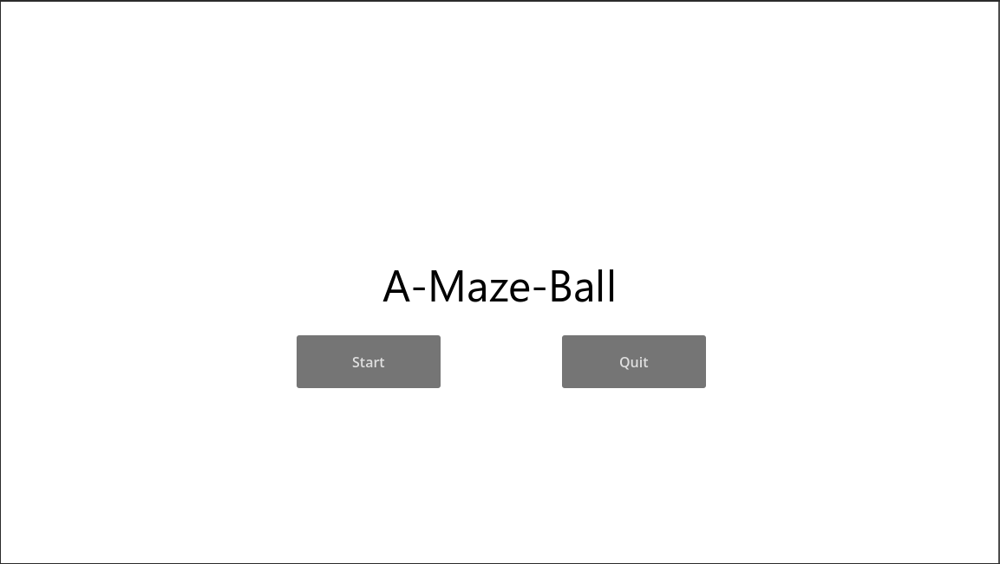
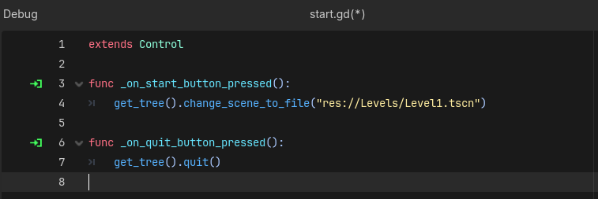

Section 7 of 7
Unit Complete →
Video Tutorials
━━━━━━━━━━━━━━━━━━━━Section 7 Videos
Watch: "Scene Management and Game Loops in Godot"
Section 7: Start Scene, Win Scene & Game Loop
Create a complete game experience with a start menu, win condition, and scene transitions.
Section Progress: 0%
1
🎬 Creating the Start Menu Scene
- Go to Scene → New Scene or press Ctrl + N
- Click "Other Node" and select a "Control" node as the root
- Click "Create"
- Press Ctrl + S to save the scene
- Name it "Start.tscn"
- Save it in your project folder
Designing the Start Screen
- With the root Control node selected, set its layout to "Full Rect" in the Inspector
- Add a "ColorRect" as a child to create a background color
- Add a "Label" child for your game title
- Set the Label text to "A-Maze-Ball" or your game name
- In the Inspector, increase the Label font size (try 48 or larger)
- Center the Label using the layout options
💡 Pro Tip: Control nodes are designed for UI elements. They automatically scale with different screen sizes!

Figure 7.1: The Start scene with game title and background
2
Creating UI Buttons
- Add a "Button" node as a child of the Control root
- In the Inspector, change the button's "Text" property to "Start Game"
- Add another "Button" node
- Change its text to "Quit"
- Select both buttons and use the layout options to center them vertically
- Space them apart (one above the other)
Adding Button Functionality
- Select the "Start Game" button
- In the Inspector, click the "Node" tab (next to Inspector)
- Find the "pressed()" signal and double-click it
- Connect it to the root Control node and click "Connect"
- Add this code to the function:
func _on_start_game_pressed():
get_tree().change_scene_to_file("res://Level1.tscn")- Select the "Quit" button
- Connect its "pressed()" signal the same way
- Add this code:
func _on_quit_pressed():
get_tree().quit()
💡 Pro Tip: Signals are Godot's way of connecting UI events to code. The "pressed" signal fires when a button is clicked!

Figure 7.2: Completed code for the Start and Quit buttons
3
Creating the Level Exit
- Create a new scene called "Exit" and add a Area2D node
- Add a CollisionShape2D as a child and set its shape to a RectangleShape2D
- Open your Level1.tscn scene
- Drag the Exit scene into Level1 as a child of the root node
- Position it at the bottom of your maze (the exit area)
Adding Aesthetics to the Exit
- On your Walls node, paint a doorway or opening at the exit location
- Make sure the Exit node is positioned over the doorway
- Use the scale tool to make the Exit fully cover the doorway
4
Scripting the Exit Trigger
- Select the "Exit" scene
- Click the "📄" icon next to "Script" in the Inspector
- Name the script "exit.gd"
- Click "Create"
- Open the signal list with the Area2D node selected and find the body_entered signal
- Double-click to connect it to the Exit node
- Add the following code to the signal function:
extends Area2D
func _ready():
# Connect the body_entered signal
body_entered.connect(_on_body_entered)
func _on_body_entered(body):
# Check if the entering body is the player
if body.name == "Player":
# Change to the win scene
get_tree().change_scene_to_file("res://Win.tscn")
💡 Pro Tip: The
body_entered signal fires whenever another physics body (like the player) touches the Area2D!
5
Creating the Win Screen
We'll duplicate the Start scene and modify it for winning:
- In the FileSystem dock, right-click on Start.tscn
- Select "Duplicate"
- Rename the duplicate to "Win.tscn"
- Double-click Win.tscn to open it
Customizing the Win Screen
- Change the Label text to "You Win!" or "Victory!"
- Delete the "Quit" button (optional, can keep it)
- Change the "Start Game" button text to "Play Again"
- You can also add a "Main Menu" button if desired
Updating the Play Again Button
- Select the "Play Again" button
- Go to the "Node" tab and find the "pressed()" signal
- Double-click to reconnect it to the root Control node
- Update the code:
func _on_play_again_pressed():
get_tree().change_scene_to_file("res://Level1.tscn")
💡 Pro Tip: Duplicating scenes saves time! Just remember to update the text and button functionality for the new purpose.
6
Configuring the Main Scene
- Go to Project → Project Settings
- Click the "General" tab
- Scroll to "Application" → "Run" → "Main Scene"
- Click the folder icon and select "Start.tscn"
- Click "Close" to save the setting
🎮 Testing the Complete Game Loop
- Press F5 to run the game
- You should see the Start screen with your title and buttons
- Click "Start Game" - Level1 should load
- Navigate through your maze to the exit doorway
- Touch the exit - the Win screen should appear
- Click "Play Again" - Level1 should restart
- Press "Quit" (if available) to exit the game
🎉 Unit 1 Complete! You've built a complete game with:
- ✅ A player character with smooth top-down movement
- ✅ Tile-based maze levels with collision
- ✅ A reusable TileSet for level design
- ✅ A Start scene with menu buttons
- ✅ An exit trigger that detects player completion
- ✅ A Win scene with Play Again functionality
- ✅ A complete game loop from Start → Level → Win → Play Again